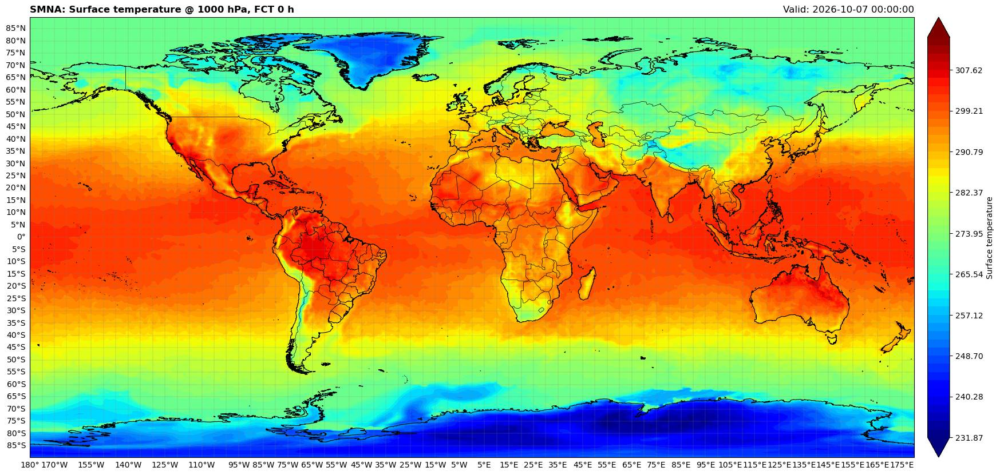
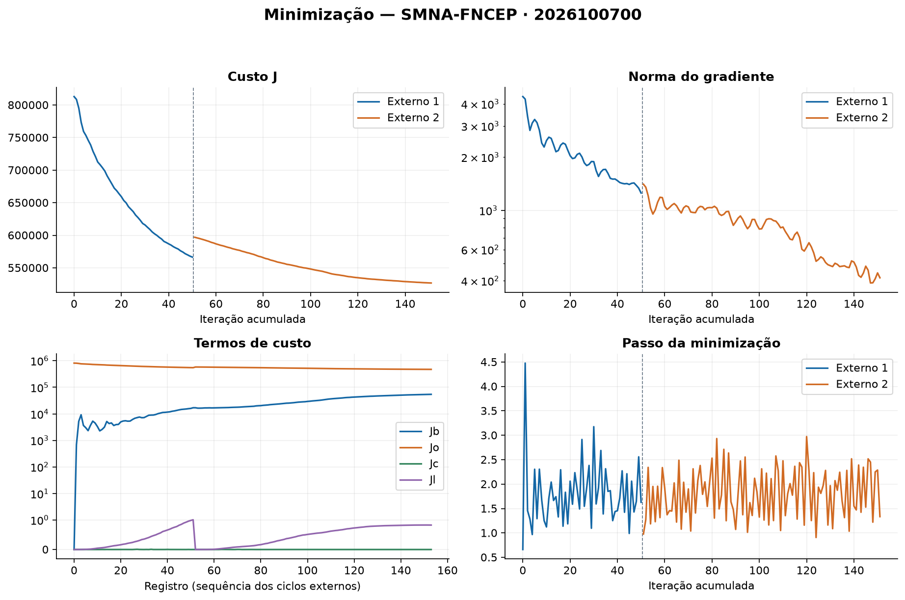

Pesquisa
Estudo do impacto das observações nas análises e previsões, das covariâncias dos erros de previsão e de métodos de assimilação. Avaliação de dados convencionais e de satélites em experimentos numéricos.
DIMNT / CPTEC / INPE
Pesquisa, desenvolvimento e acompanhamento de sistemas de assimilação de dados para a previsão numérica de tempo.
O GAD atua na DIMNT do CPTEC/INPE.


01 / ATIVIDADES
Estudo do impacto das observações nas análises e previsões, das covariâncias dos erros de previsão e de métodos de assimilação. Avaliação de dados convencionais e de satélites em experimentos numéricos.
Integração de modelos e sistemas de assimilação, ferramentas para ler diagnósticos, avaliar previsões e visualizar resultados. Configuração de ambientes de compilação e testes para os recursos computacionais do INPE.
Acompanhamento dos ciclos do SMNA, da disponibilidade das observações, das etapas de execução e dos campos meteorológicos. Análise de diagnósticos para apoiar a manutenção e a avaliação do sistema.
02 / SOFTWARE
ATÉ 2026
O GSI compõe o SMNA com o BAM. O grupo mantém ferramentas para investigar os diagnósticos de assimilação e as matrizes de covariância dos erros de previsão.
SMNA no GitHubA PARTIR DE 2026
O JEDI, desenvolvido pela comunidade JCSDA, oferece uma estrutura modular para diferentes modelos, observações e métodos de assimilação. O trabalho do grupo inclui a integração com o MONAN e ambientes de compilação e testes do MPAS-JEDI.
Documentação JEDI2026 marca a transição de desenvolvimento para JEDI; o monitoramento do SMNA com BAM e GSI permanece como referência do sistema existente.
Leitura e visualização dos diagnósticos de assimilação do GSI.
Repositório GitHubLeitura das matrizes de covariância dos erros de previsão compatíveis com o GSI.
Repositório GitHubAvaliação de modelos numéricos de tempo e clima.
Repositório GitHubCompilação e testes do MPAS-JEDI nas máquinas do INPE.
Repositório GitHubDesenvolvimento da integração do MONAN com a estrutura JEDI.
Repositório GitHubVisualização dos campos meteorológicos e acompanhamento do SMNA.
Repositório GitHub03 / EQUIPE
04 / RESULTADOS
Artigos publicados entre 2024 e 2026, com participação de membros do grupo.
05 / ENSINO
Recursos produzidos por membros do grupo para o ensino de assimilação de dados.
Projeto variational-cost-function-demo, de João Gerd Zell de Mattos.
Repositório GitHubPágina da disciplina MET 563-3 da PGMET/INPE, de Carlos Frederico Bastarz.
Página da disciplinaRepositório da disciplina Introdução à Assimilação de Dados, de Carlos Frederico Bastarz.
Repositório GitHub